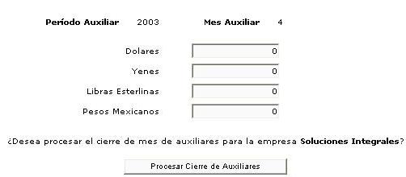

El cierre de mes de los sistemas auxiliares, permite finalizar el período de los sistemas auxiliares, y generar todos los procesos de Cierre de Mes de cada módulo, generando los procesos de cálculo de diferencial cambiario o revaluación, movimiento de documentos a históricos, depuración de saldos de documentos, etc.
Para ejecutar el cierre de sistemas auxiliares, es necesario indicar los tipos de cambio corrientes al día del cierre, solamente las monedas involucradas en transacciones en Movimientos Bancarios, Cuentas por Cobrar y Cuentas por Pagar serán requeridas.

Figura 1.Cierre de mes de auxiliares.